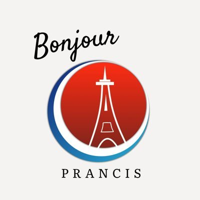

Bienvenue! Selamat Datang di Kursus Bahasa Prancis
Kami menyediakan layanan belajar bahasa Prancis dari dasar hingga mahir dengan metode yang menyenangkan dan interaktif.

Al Fathony Munawar
Kontak: 082338916657
Pengajar bersertifikat dengan pengalaman mengajar lebih dari 5 tahun di bidang bahasa asing.